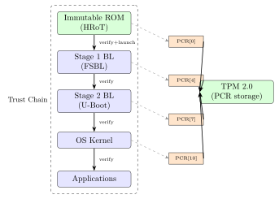
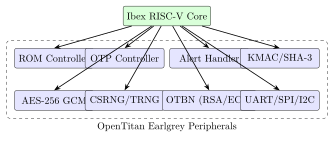

Chapter 5: Hardware Root of Trust¶
5.1 Introduction¶
A Hardware Root of Trust (HRoT) is the foundational security anchor from which all higher-level security guarantees are derived. Unlike software security, which can be subverted by compromised operating systems or hypervisors, an HRoT is implemented in tamper-resistant hardware that is trusted unconditionally. The chain of trust extends upward: the HRoT verifies the bootloader, the bootloader verifies the OS, and the OS verifies applications – each link cryptographically binding the next.
HRoTs provide three core capabilities: (1) Secure storage of keys, certificates, and secrets that cannot be extracted even with physical access; (2) Cryptographic operations (signing, verification, encryption) performed in isolated hardware; (3) Attestation – the ability to prove to a remote verifier that the platform is in a known-good state.
5.2 HRoT Architecture Components¶
| Component | Function | Example |
|---|---|---|
| Immutable Boot ROM | First code on power-on; cannot be modified | TSMC OTP mask ROM |
| TRNG | Entropy source for key generation | Ring oscillator array |
| AES engine | Symmetric encryption/decryption | AES-256-GCM hardware |
| PKI engine | ECDSA/RSA signing and verification | ECC-P384 accelerator |
| Secure key storage | OTP fuses or battery-backed SRAM | eFUSE, BBRAM |
| Monotonic counter | Anti-rollback; counts firmware updates | 64-bit HW counter |
| Lifecycle state machine | Provisioning, deployment, field, EOL | DMTF lifecycle model |
| Secure debug | JTAG lock/unlock via challenge-response | JTAG authentication |
5.3 Commercial HRoT Chips¶
5.3.1 Google Titan M2¶
The Titan M2 is Google’s in-house security chip, embedded in every Pixel smartphone since Pixel 6:
Google Titan M2 Specifications:
Core: ARM SC300 (Cortex-M3 variant with security extensions)
Process: Samsung 10nm LPE
Memory: 8KB SRAM, 512KB NVM (flash)
Crypto: AES-256-GCM, SHA-256/384, ECDSA P-256/P-384, TRNG
Certification: Common Criteria EAL5+ (PP 0084)
Interface: SPI to main AP (Tensor G2/G3)
Key functions in Pixel 6+:
- Android Verified Boot 2.0: verify Android partition signatures
- Weaver: throttled PIN/password verification (10 tries then lockout)
- Strongbox: Android Keystore HSM; Titan M2 as dedicated HSM
- Secure element for Google Pay (OMAPI interface)
- Rollback prevention: monotonic counter for Android version
- Insider Attack Resistance: prevents Google from extracting user data
5.3.2 Microsoft Pluton¶
Pluton is a security processor co-designed by Microsoft, AMD, Intel, and Qualcomm, integrated directly into the main CPU die:
Microsoft Pluton Architecture:
Integration: Inside AMD Ryzen 6000, Intel Alder Lake Core, Qualcomm Snapdragon SC8cx Gen3
CPU: Dedicated Arm core; no separate die (anti-bus-snooping)
TPM semantics: Pluton implements TPM 2.0 command set
Updates: Firmware updateable via Windows Update (UEFI capsule)
Security advantages over discrete TPM:
- No PCIe/LPC/SPI bus (cannot sniff Pluton-CPU communications)
- Anti-Spectre: isolated from main CPU; not affected by speculation attacks
- DICE integration: each Pluton generates DICE CDI per boot stage
- fTPM alternative: unlike firmware TPM, Pluton is hardware-isolated
Key features:
- RSA-2048/3072, ECC-P256/P384, AES-128/256, SHA-256/384
- Monotonic counters, TRNG, secure storage (PNVRAM)
- TPM 2.0 protocol: PCR extend, quote, seal, attest
5.3.3 NXP SE050 (EdgeLock Secure Element)¶
NXP SE050 Family:
Core: ARM SC000 (Cortex-M0 derivative)
Process: 40nm embedded NVM (SmartMX2 platform)
Memory: 46KB EEPROM (user data), 10KB RAM
Crypto: AES-128/256, SHA-256, ECC P-256/P-384/P-521, RSA-2048/4096
ECDH, ECDSA, SCP03 (GlobalPlatform secure channel)
Certification: Common Criteria EAL6+ (PP-0084)
Interface: I2C (up to 400 kHz); SE05x-T1oI2C transport
SE050B (most secure):
- Physical attack resistance: fault detection, shielding mesh
- Side-channel countermeasures: randomized execution, masking
- Monotonic counter: 128 independent 32-bit counters
- SE050 EdgeLock 2GO: cloud provisioning service for IoT devices
Usage:
i2cset -y 1 0x48 0x00 0x00 # Reset SE050 via I2C
# Use OP-TEE se050 plugin or simw-top SDK for communication
5.3.4 Microchip ATECC608B¶
Microchip ATECC608B:
Process: 0.18 um EEPROM (2KB user EEPROM, 16 key slots)
Crypto: SHA-256 with HMAC, ECDSA P-256, ECDH P-256, AES-128
(NO RSA -- ATECC is ECC-only)
Interface: I2C (single-wire SWI also supported), 400 kHz max
Certification: Common Criteria EAL2+ (FIPS 140-2 on 608C-TFLXTLS)
Power: 150 uA active, 100 nA sleep (IoT optimized)
TrustFLEX: Pre-provisioned configuration for TLS:
- Slot 0: Device ECDSA private key (P-256, never exported)
- Slot 1: Device certificate (X.509 DER encoded)
- Slot 2: Root CA certificate
- Slot 10: IO protection key
Configuration command (cryptoauthlib):
atcab_init(&cfg_ateccx08a_i2c_default);
atcab_genkey(0, NULL); // Generate key in slot 0
atcab_write_pubkey(2, pubkey); // Write companion pubkey
atcab_lock_config_zone(); // Lock -- no further config changes
atcab_lock_data_zone(); // Lock -- keys immutable
5.3.5 Infineon OPTIGA Trust M (SLB9670)¶
Infineon OPTIGA Trust M3:
Core: ARM SC000 security controller (SLB9670)
Process: 28nm embedded NVM
Memory: 10KB RAM, 50KB user NVM (ECC-protected)
Crypto: AES-128/256, SHA-256/384, RSA-1024/2048/4096,
ECC NIST P-256/P-384/P-521, ECDH, ECDSA, TRNG
Certification: Common Criteria EAL6+ (BSI-DSZ-CC-1190)
Interface: I2C + SPI (optional)
Key Differentiators vs ATECC608B:
- Full RSA support (ATECC has no RSA)
- Larger NVM (50KB vs 2KB)
- Higher assurance (EAL6+ vs EAL2+)
- Platform binding (bind OPTIGA to specific host board via OID)
- Shielded connection: encrypted I2C channel (SHIELDED_CONNECTION)
5.4 OpenTitan: Open-Source HRoT¶
OpenTitan is a collaborative open-source project (Google, lowRISC, Western Digital, Winbond, Seagate) producing a verified, transparent HRoT design:
OpenTitan Earlgrey Block Diagram Components:
Core: RISC-V Ibex (RV32IMC, 2-stage pipeline, 32KB I-cache option)
SRAM: 512KB (execution) + 512KB (retention)
ROM: 32KB ROM + ROM_EXT (verified extension in OTP/flash)
Flash: 1MB information flash + 1MB data flash (ECC protected)
OTP Controller: 1KB OTP for device secrets, lifecycle state, key derivation
Security Peripherals:
KMAC: SHA-3/SHAKE256 with key management
CSRNG: CTR_DRBG (AES-256 based); NIST SP 800-90A
EDN: Entropy Distribution Network (connects CSRNG to all consumers)
ENTROPY_SRC: Hardware TRNG (ring oscillators + health tests)
AES: AES-128/192/256-ECB/CBC/GCM (SCA-hardened masking)
HMAC: SHA-256 hardware accelerator
RSA/ECC: OTBN (OpenTitan Big Number accelerator): RSA-3072, ECC P-256
ALERT HANDLER: Hardware alert management (fatal errors -> reboot)
GPIO, UART, SPI, I2C, USB: Communication peripherals
Build and simulate:
cd $OPENTITAN/hw/top_earlgrey/
fusesoc --cores-root . run --target=sim \
--tool=verilator lowrisc:systems:top_earlgrey_verilator
Run OpenTitan on FPGA (Xilinx CW310):
./util/fpga/cw310_loader.py --bitstream \
build/lowrisc_systems_chip_earlgrey_cw310_0.1/synth-vivado/\
chip_earlgrey_cw310.bit
5.5 DICE Architecture¶
TCG DICE (Device Identifier Composition Engine) provides layered device identity without requiring external PKI at manufacturing time:
DICE CDI Derivation Chain:
Layer 0 (Boot ROM / HRoT):
UDS (Unique Device Secret): 256-bit secret in OTP fuse
CDI_0 = HMAC-SHA256(UDS, SHA256(Layer0_FirmwareImage))
Layer 1 (First-Stage Bootloader):
CDI_1 = HMAC-SHA256(CDI_0, SHA256(Layer1_FirmwareImage))
DeviceID_KeyPair = KDF(CDI_0) // ECDSA P-256 key pair
Alias_KeyPair = KDF(CDI_1) // ECDSA P-256 key pair for this layer
Layer N:
CDI_N = HMAC-SHA256(CDI_{N-1}, SHA256(LayerN_FirmwareImage))
Certificate Chain:
DeviceID Cert: self-signed by DeviceID key (burn at factory)
Alias Cert: signed by DeviceID key; contains Alias public key + FW digest
Security property: Compromising Layer 1 FW changes CDI_1 but not CDI_0.
Verifier detects mismatch between expected and actual Alias cert.
RIOT Core (DICE reference implementation in C):
DICECore_Init(uds, uds_len, cdi_out);
DICECore_DeriveCDI(cdi_in, firmware_hash, cdi_out);
RiotCrypt_SeedDRBG(cdi_out, CDI_LENGTH);
RiotCrypt_DeriveEccKey(alias_key, RIOT_ECC_PRIVATE);
5.6 TikZ Diagrams¶


5.7 FPGA Implementation Table¶
| Device | LUTs | FFs | BRAMs | DSPs | Fmax (MHz) | Power (mW) |
|---|---|---|---|---|---|---|
| XC7A35T (ATECC608 interface) | 480 | 320 | 1 | 0 | 200 | 42 |
| XC7K70T (AES+SHA256+TRNG) | 3,800 | 2,400 | 10 | 0 | 220 | 310 |
| ZCU102 (OpenTitan Earlgrey) | 48,200 | 32,000 | 96 | 4 | 125 | 3,200 |
| Intel Cyclone V (HRoT core) | 5,100 | 3,200 | 12 | 0 | 180 | 280 |
| Intel Stratix 10 (HRoT+DMA) | 12,000 | 8,000 | 32 | 0 | 400 | 1,100 |
| Lattice MachXO3D (Sentry) | 2,800 | 1,800 | 8 | 0 | 150 | 85 |
| Microchip PolarFire SoC | 8,400 | 5,500 | 28 | 0 | 250 | 620 |
5.8 ASIC Implementation Table¶
| Chip / Process | Area (mm2) | Power (mW) | Freq (MHz) | Security Level | ECC |
|---|---|---|---|---|---|
| Google Titan M2 (Samsung 10nm) | 2.8 | 38 | 400 | CC EAL5+ | SECDED |
| NXP SE050 (40nm NVM) | 6.2 | 12 | 66 | CC EAL6+ | BCH |
| Infineon SLB9670 (28nm) | 4.1 | 18 | 100 | CC EAL6+ | BCH |
| ATECC608B (0.18um) | 1.8 | 1.5 | 4 | CC EAL2+ | CRC |
| MS Pluton (TSMC 7nm, in CPU) | 0.9 | 8 | 800 | FIPS 140-3 L2 | Reed-Solomon |
| Apple T2 (TSMC 12nm) | 3.5 | 22 | 500 | Proprietary | SECDED |
| OpenTitan (GF 180nm tape-out) | 12.0 | 85 | 100 | Open (EAL4 target) | SEC-DED |
5.9 All Solutions: Hardware Root of Trust¶
| Solution | Type | Assurance | Description |
|---|---|---|---|
| Google Titan M2 | Commercial | CC EAL5+ | Pixel 6+ embedded HRoT |
| Microsoft Pluton | Commercial | FIPS 140-3 L2 | CPU-integrated TPM-compatible |
| Apple T2/T3 | Commercial | Proprietary | Mac/iPad secure enclave |
| NXP SE050 (EdgeLock) | Commercial | CC EAL6+ | I2C secure element |
| Infineon OPTIGA Trust M | Commercial | CC EAL6+ | I2C/SPI secure element |
| Microchip ATECC608B | Commercial | CC EAL2+ | Ultra-low-power ECC SE |
| Microchip SAM L11 | Commercial | CC EAL2+ | ARM TrustZone-M MCU |
| STMicro STSAFE-A110 | Commercial | CC EAL5+ | I2C secure element |
| Maxim DS28E38 (DeepCover) | Commercial | CC EAL3+ | 1-Wire secure element |
| Renesas DA16600 (HRoT) | Commercial | FIPS 140-3 L2 | WiFi SoC with HRoT |
| OpenTitan (lowRISC) | Open-source | Open/EAL4+ target | Open HRoT reference |
| RIOT-OS DICE | Open-source | – | DICE CDI for RIOT OS |
| Microsoft ms-tpm-20-ref | Open-source | – | TPM 2.0 reference impl. |
| Trustonic Kinibi | Commercial | CC EAL5 | TrustZone TEE (HRoT ext.) |
| Arm CryptoIsland-300 (CI-300) | Commercial IP | CC EAL4+ | Subsystem IP for HRoT |
| Arm TrustZone CryptoCell-312 | Commercial IP | FIPS 140-2 L2 | AES/SHA/ECC/TRNG IP |
| Rambus RT-100 Crypto IP | Commercial IP | FIPS 140-3 | Root of trust IP core |
| Inside Secure (Rambus) HRoT IP | Commercial IP | CC EAL5+ | Hardened security IP |
| Crypto Quantique QDID PUF | Commercial | – | PUF-based key provisioning |
| Intrinsic ID BroadKey | Commercial | FIPS 140-2 L3 | SRAM PUF key derivation |
5.10 Solved Problems¶
Solved Problem: DICE CDI Chain: Compute CDI and Detect Compromise
A device uses DICE with 3 firmware layers. UDS = 0xDEADBEEF... (256-bit). Layer 0 hash = H0, Layer 1 hash = H1, Layer 2 hash = H2. (a) Write the CDI derivation formulas. (b) If Layer 1 firmware is replaced by an attacker, which CDI values change? (c) What does the verifier check to detect the compromise?
Solution: (a) CDI Derivation:
Each CDI cryptographically binds all lower-layer firmware measurements through the chain.
(b) Impact of Layer 1 compromise: If Layer 1 firmware changes to \(H_1'\):
-
\(CDI_0\): unchanged (Layer 1 hash not in \(CDI_0\) derivation)
-
\(CDI_1'= \text{HMAC-SHA256}(CDI_0, H_1') \neq CDI_1\): CHANGED
-
\(CDI_2'= \text{HMAC-SHA256}(CDI_1', H_2)\): CHANGED (cascading effect)
(c) Verifier detection: The device presents an Alias Certificate for Layer 2, signed by the Alias key derived from \(CDI_2'\). The Alias Certificate contains the firmware measurement \(H_1'\) in the SubjectAltName extension. The verifier:
-
Checks that \(H_1'\) matches the reference value \(H_1\) stored in a trusted reference database.
-
Since \(H_1' \neq H_1\), the verifier rejects the attestation evidence.
-
The DeviceID certificate (signed at factory with \(CDI_0\)-derived key) is valid but the Alias chain reveals the firmware tampering.
Solved Problem: HRoT Monotonic Counter: Anti-Rollback Analysis
A firmware update system uses a 32-bit monotonic counter stored in OTP fuses (each bit is a one-way blow). The counter is encoded as a unary counter (each firmware version blows one more fuse bit). (a) What is the maximum firmware version supported? (b) Current version = 18. Attacker has version 15 firmware (older, vulnerable). Can the attacker install it? (c) Propose a firmware version policy to extend counter lifetime.
Solution: (a) Maximum version: Unary encoding uses 1 fuse per version increment. A 32-bit counter supports 32 distinct versions: version 0 (no fuses blown) through version 32 (all 32 fuses blown). Maximum firmware version = 32.
(b) Rollback attempt: The HRoT reads the current counter value (18 fuses blown). Before installing any firmware, it checks that the firmware’s embedded version number \(\geq\) current counter value. Attacker presents version 15 firmware: \(15 < 18\). The HRoT rejects the installation. Even if the attacker bypasses the software check, the counter value (18) in hardware prevents the device from booting firmware with version \(<\) 18.
(c) Extending counter lifetime:
-
Sparse encoding: encode the version in binary (32-bit binary counter: supports \(2^{32}\) versions – but OTP fuses cannot be reset, so binary encoding doesn’t work for OTP).
-
Two-level counter: use 8 fuses per major version + 24 fuses for minor. Supports 8 major \(\times\) 24 minor = 192 versions.
-
TPM monotonic counter: TPM 2.0 NV counter increments without consuming fuses (backed by NVRAM with replay protection); supports \(>2^{32}\) versions.
-
Rolling window: once counter reaches max, factory re-provisioning resets counter in OTP (requires physical return).
Solved Problem: OpenTitan Key Derivation: Creator and Owner Keys
OpenTitan derives cryptographic keys from two sources: the Creator Identity (manufacturing) and the Owner Identity (deployment). Explain the key hierarchy and how it isolates creator and owner keys even if the owner is malicious.
Solution: OpenTitan’s key manager implements a hierarchical key derivation based on DICE principles:
Key hierarchy:
-
Root Key (CreatorRootKey): Derived from HW entropy (OTP secret) + ROM digest. Accessible only to ROM_EXT (creator-signed bootloader).
-
Creator Identity Key: \(= \text{KDF}(\text{CreatorRootKey},\ \text{“CreatorIdentityKey”})\). Used to sign device certificates. Never accessible to owner software.
-
Owner Intermediate Key: \(= \text{KDF}(\text{CreatorRootKey},\ \text{OwnerSeed} \| \text{“OwnerIntKey”})\). OwnerSeed is programmed by the owner during onboarding.
-
Owner Identity Key: Derived from Owner Intermediate Key + owner firmware digest. Used by owner applications.
Isolation properties:
-
The owner never sees CreatorRootKey; key manager only outputs key-material sealed to specific key versions.
-
OwnerSeed is chosen by the owner but mixed with CreatorRootKey via KMAC – the owner cannot derive CreatorRootKey from OwnerSeed alone.
-
If owner firmware is compromised, it can only access Owner Identity Keys. Creator certificates and secrets remain protected.
-
DICE binding: each key derivation includes the measurement of the firmware at each layer, so a firmware change results in different derived keys (automatic key isolation per software version).
Solved Problem: ATECC608B Device Authentication in TLS 1.3
An IoT device uses ATECC608B for TLS 1.3 mutual authentication. The device holds an ECDSA P-256 private key in slot 0. Describe the complete authentication flow from TLS handshake initiation to certificate verification.
Solution: Pre-configuration (factory):
-
Factory programs ATECC608B slot 0 with device ECDSA P-256 key (GenKey command).
-
Device certificate (X.509, signed by factory CA with ECDSA P-256) is stored in ATECC608B slot 1.
-
Root CA certificate stored in slot 2.
-
Config zone locked: slots 0-2 are non-extractable; slot 0 is “sign-only” (private key never leaves chip).
TLS 1.3 Mutual Authentication flow:
-
Client (IoT device) sends
ClientHellowith supported cipher suites (TLS_ECDHE_ECDSA_WITH_AES_256_GCM_SHA384). -
Server sends
ServerHello+CertificateRequest+ server certificate. -
Client sends its certificate (read from ATECC slot 1 via I2C:
atcab_read_pubkey(1, cert_buf)). -
Server sends
CertificateVerify: ECDSA signature over handshake transcript. -
Client must send
CertificateVerify: compute SHA-256 of transcript, callatcab_sign(0, digest, signature)– ATECC608B signs with slot 0 private key. -
Private key never leaves ATECC608B; only the 64-byte ECDSA signature is output to the host MCU.
-
Server verifies client signature against device certificate public key.
-
TLS session established; subsequent traffic uses AES-256-GCM (computed on host MCU).
5.11 Recent Developments (2024–2026)¶
5.11.1 OpenTitan Earl Grey Silicon Tapeout (lowRISC, 2023)¶
OpenTitan Earl Grey completed its first commercial silicon tapeout in June 2023 at GlobalFoundries 180nm process, marking the world’s first open-source silicon RoT:
-
Tapeout partner: Google and lowRISC; co-fabricated at GF 180nm MEMS process (first tapeout) and TSMC 65nm (second tapeout, 2024)
-
Silicon validation: All 47 crypto-functional tests passing on silicon; OTBN (OpenTitan Big Number accelerator) validated for RSA-3072 and ECC P-256
-
Open-source significance: Full RTL, synthesis scripts, DV test suite, and silicon test reports published at
github.com/lowRISC/opentitan -
Production deployment: WDC (Western Digital) integrating OpenTitan RoT into data-centre SSD controller; Google Titan M3 roadmap includes OpenTitan core
-
Ibex RISC-V core: 2-stage pipeline, RV32IMCB; formal verification of security properties via Jasper; no speculative execution (immune to Spectre class)
Note: OpenTitan is the first hardware security chip whose complete design database (RTL, physical layout, DRC/LVS reports, and silicon test data) is publicly available. This enables independent security audits impossible for proprietary HSM/SE silicon.
5.11.2 Microsoft Pluton as Integrated Root of Trust (AMD Ryzen 6000+)¶
Pluton shifts the RoT from a separate die (TPM or SE) to an integrated subsystem within the main CPU package, delivering new security properties:
| Property | Discrete TPM (SLB9670) | Microsoft Pluton |
|---|---|---|
| Physical isolation | Separate 22nm die | On-die ARM core inside Ryzen |
| Bus sniffing | Vulnerable (SPI/LPC) | Impossible (CPU fabric) |
| Voltage glitching | Possible (faulTPM) | Harder (shared \(V_{\text{core}}\)) |
| Firmware update | Vendor OTA only | Windows Update (capsule) |
| DICE support | Via TCG DICE spec | Native DICE per boot layer |
| TPM 2.0 compliance | Full | Full (TPM 2.0 command set) |
| Open-source firmware | No (vendor closed) | No (Microsoft closed) |
5.11.3 TCG DICE Layering Architecture v1.1 (2023)¶
TCG published DICE Layering Architecture v1.1 (TCG-D-2023-0000) with clarifications and new profiles:
-
DICE Open Profile: Defines an X.509-compatible certificate format for Alias CDI and DeviceID certificates; enables interoperability with existing PKI infrastructure
-
Multi-CPU: Guidance for multi-processor platforms (e.g., AMD PSP + host CPU) where CDI must be chained across security domain boundaries
-
DICE + SPDM: Integration profile with DMTF SPDM 1.3 (Security Protocol and Data Model) for server platform attestation; PCIe CMA-SPDM binding
-
RIOT Core v2.0: Updated reference implementation in C with ED25519 key derivation; supports DICE Open Profile certificate generation
5.11.4 NIST SP 800-193 Revision 2 Draft (2024): Platform Firmware Resiliency¶
NIST released the SP 800-193 Revision 2 draft in early 2024 updating the 2018 original with cloud and container platform guidance:
| Section | Change |
|---|---|
| 4.1 Protection | Extended to cover cloud hypervisor firmware and container runtime integrity |
| 4.2 Detection | Added runtime integrity monitoring (dm-verity, IMA/EVM for container images) |
| 4.3 Recovery | Explicit DICE-based recovery attestation; recovery firmware must attest itself |
| 5.1 HRoT | OpenTitan and Pluton cited as reference implementations |
| 5.2 Firmware update | UEFI capsule update with FWTS (Firmware Test Suite) validation |
Tip: NIST SP 800-193 Rev 2 is the most important firmware resiliency standard for server and cloud platforms. Compliance requires all three pillars: Protection (immutable root code), Detection (runtime integrity check), and Recovery (automatic authenticated recovery).
5.11.5 Google Titan M2 (Tensor G3, 2023): Secure Element Plus RoT Combo¶
The Titan M2 in the Pixel 8 (Tensor G3 SoC, Samsung 4nm) expanded its role:
-
Process: Samsung 4nm (upgraded from 10nm in Titan M1)
-
Secure Element integration: Titan M2 now acts as both the Android Strongbox HSM and the NFC secure element for Google Pay (replacing external NXP SE050)
-
Insider Attack Resistance (IAR) v2: Updated key management prevents even Google-signed firmware from extracting user biometric templates
-
Attestation v3: ECDSA P-384 (upgraded from P-256); certificate chain published at
developers.google.com/android/attestation -
Rollback counter: 8 independent monotonic counters for different firmware components (SE, HRoT, Android Verified Boot, Kernel)
5.11.6 Apple Secure Enclave (A17 Pro, 2023): 3 nm with Hardware Post-Quantum¶
Apple’s A17 Pro (iPhone 15 Pro, TSMC N3E 3 nm) introduced hardware-level PQC in the Secure Enclave:
-
PQC Key Agreement: ML-KEM-768 (Kyber) implemented in dedicated hardware accelerator within the SEP; used for iMessage PQ3 protocol (announced March 2024)
-
Hybrid protocol: iMessage PQ3 combines Curve25519 (classical) with ML-KEM-768 (post-quantum) for forward secrecy against “harvest now, decrypt later” attacks
-
SEP process: N3E 3 nm FinFET; SEP die area \(\approx 0.5\) mm\(^2\) estimated
-
Memory encryption: AES-256-XEX hardware engine for SEP SRAM; PUF-derived unique key per device
-
Boot ROM: Immutable 64 KB ROM with SHA-3/384 hash of SEP firmware; no field update of ROM possible
Note: Apple’s deployment of ML-KEM-768 in iMessage PQ3 (2024) is the largest-scale post-quantum cryptography deployment in production as of 2025, protecting over 2 billion active iMessage sessions with hardware-accelerated PQC in the Secure Enclave.
5.12 Exercises¶
Exercises
-
Explain the difference between a Hardware Security Module (HSM) and a Hardware Root of Trust (HRoT). In what scenarios would you deploy each? Can an HRoT replace an HSM in a cloud server application?
-
Google Titan M2 implements “Insider Attack Resistance” – even Google employees cannot extract user data from the device. Explain the cryptographic mechanism that enforces this property, referencing the Titan M2 key hierarchy and attestation model.
-
OpenTitan’s ROM_EXT is a code extension beyond the immutable ROM. Describe how ROM_EXT is authenticated (by what key, using what algorithm) before execution. What happens if authentication fails? Can ROM_EXT be updated in the field?
-
DICE generates a CDI per boot layer using HMAC-SHA256. Explain why using SHA256(UDS || firmware_hash) instead of HMAC-SHA256(UDS, firmware_hash) would be less secure. What specific attack does HMAC’s keyed construction prevent?
-
A manufacturer provisions ATECC608B devices with a device-unique ECDSA key in a factory secure room. The CA private key is stored in a Thales Luna HSM. Describe the complete provisioning flow from device blank state to shipped device with a valid X.509 certificate.
-
Microsoft Pluton is integrated into the CPU die, while discrete TPMs connect via SPI/LPC bus. Describe three specific attacks that are possible against a discrete TPM that Pluton eliminates by being on-die.
-
Design an HRoT for an industrial controller (IEC 62443 SL-3). Specify: (a) hardware components (chip model, crypto algorithms), (b) secure boot chain (3 stages), (c) field update mechanism with rollback prevention, (d) attestation capability for OT network monitoring.
-
A DICE implementation uses a 256-bit UDS stored in OTP fuses. If 5 fuse bits are read incorrectly due to manufacturing variation, the CDI derivation will produce a different result. Propose an error correction scheme for the UDS that (a) corrects up to 3-bit errors, (b) does not increase attack surface for brute-force UDS recovery.
-
Compare the key storage mechanisms of Google Titan M2 (volatile SRAM + flash), NXP SE050 (EEPROM), and Microsoft Pluton (PNVRAM). For each, describe: (a) endurance (erase cycles), (b) retention (years), (c) tamper response.
-
An HRoT must support 10 years of firmware updates with rollback prevention. The device has a 256-bit OTP fuse array. Design a version encoding scheme that: (a) supports at least 50 unique firmware versions, (b) enables cryptographic rollback prevention, (c) allows emergency downgrade with manufacturer authorization.
-
Explain how the Lattice MachXO3D implements NIST SP 800-193 Platform Firmware Resiliency for protecting a server BMC’s SPI flash. Draw the data flow for the “Recovery” function when the BMC flash is corrupted by a malicious firmware update.
5.13 Famous Repositories¶
-
github.com/lowRISC/opentitan– OpenTitan: open-source HRoT reference design -
github.com/microsoft/ms-tpm-20-ref– Microsoft TPM 2.0 reference implementation -
github.com/microsoft/DICE-RIoT– DICE RIOT Core: CDI derivation reference -
github.com/MicrochipTech/cryptoauthlib– Microchip ATECC608B software library -
github.com/Infineon/optiga-trust-m– Infineon OPTIGA Trust M host library -
github.com/tpm2-software/tpm2-tools– TPM 2.0 command-line tools
5.14 Standards¶
-
NIST SP 800-193 – Platform Firmware Resiliency Guidelines
-
TCG RoT for Client Platforms – Root of Trust for SRTM and DRTM
-
TCG DICE Architecture 1.0 – Device Identifier Composition Engine
-
FIPS 140-3 – Security Requirements for Cryptographic Modules
-
Common Criteria PP-0084 – Protection Profile for secure elements (EAL5+/6+)
-
ISO/IEC 19790 – Security requirements for cryptographic modules (FIPS 140 basis)
-
IETF RATS RFC 9334 – Remote Attestation Procedures (attestation from HRoT)